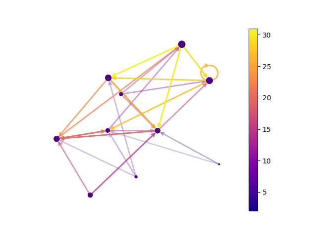

Note
Click here to download the full example code
Directed Graph#
Draw a graph with directed edges using a colormap and different node sizes.
Edges have different colors and alphas (opacity). Drawn using matplotlib.
import matplotlib as mpl
import matplotlib.pyplot as plt
import networkx as nx
seed = 13648 # Seed random number generators for reproducibility
G = nx.random_k_out_graph(10, 3, 0.5, seed=seed)
pos = nx.spring_layout(G, seed=seed)
node_sizes = [3 + 10 * i for i in range(len(G))]
M = G.number_of_edges()
edge_colors = range(2, M + 2)
edge_alphas = [(5 + i) / (M + 4) for i in range(M)]
cmap = plt.cm.plasma
nodes = nx.draw_networkx_nodes(G, pos, node_size=node_sizes, node_color="indigo")
edges = nx.draw_networkx_edges(
G,
pos,
node_size=node_sizes,
arrowstyle="->",
arrowsize=10,
edge_color=edge_colors,
edge_cmap=cmap,
width=2,
)
# set alpha value for each edge
for i in range(M):
edges[i].set_alpha(edge_alphas[i])
pc = mpl.collections.PatchCollection(edges, cmap=cmap)
pc.set_array(edge_colors)
ax = plt.gca()
ax.set_axis_off()
plt.colorbar(pc, ax=ax)
plt.show()
Total running time of the script: ( 0 minutes 0.217 seconds)